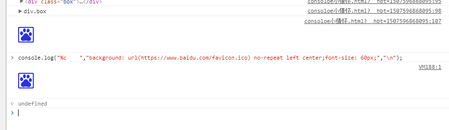

嘿，快看控制台发生了啥
1.基本语法
console.log的基本语法如下：
console.log(object [, object, …])
2.占位符
| 格式占位符 |
作用 |
| %s |
字符串 |
| %d or %i |
整数 |
| %f |
浮点数 |
| %o |
可展开的DOM |
| %O |
列出DOM的属性 |
| %c |
根据提供的css样式格式化字符串 |
说明：
火狐占位符中%o和%O没区分，原因：默认%o，默认dom均为展开状态
IE中不支持占位符 %c %o %O
结果图显
Chrome
Firefox
360
IE
使用%c占位符时，对应的后面的参数必须是CSS语句，用来对输出内容进行CSS渲染。
于是，利用%c配合CSS可以做出吊炸天的效果，比如背景色、字体颜色渐变、字体3D效果、图片等，
情况允许再用颜文字、emoji卖个萌，萌萌哒~
注意
- console不能定义img，因此用背景图片代替.
- console不支持width和height，利用空格和font-size代替；还可以使用padding和line-height代替宽高。
- chrome没出来？没出来就对了……不支持啊！
原因是ConsoleViewMessage.js源码把url和谐掉了。
不过可以下载firebug插件查看啦~ gif图片也是支持的~~~
- console是默认换行的。
上面说的，在实际验证中是不对的呀，在火狐上没有出现图片，在chrome中有，如图：
Chrome

Firefox
360
3.字符画
在线工具--这里推荐三个ASCII字符画制作工具：
4.总结
- 只有开发者工具打开的时候IE8/9才支持console；IE6/7不支持console且抛出错误
- %c以及%o、%O，IE不支持；而firefox的%o和%O的行为都支持%o。
- %c的背景图展示目前只有firebug不支持。与原文意见不太一样的地方，具体，请自行验证
- 链接的不同显示：chrome可点击跳转；火狐默认开发者工具的链接前面需要有一个空格隔开文本才可点击跳转，而firebug总是不可点击；IE不可点击跳转。
5.参考链接
凹凸实验室
Diagnose and Log to Console | Web Tools - Google Developers
Console API Reference - Google Chrome
Javascript生成字符画
Can I use console